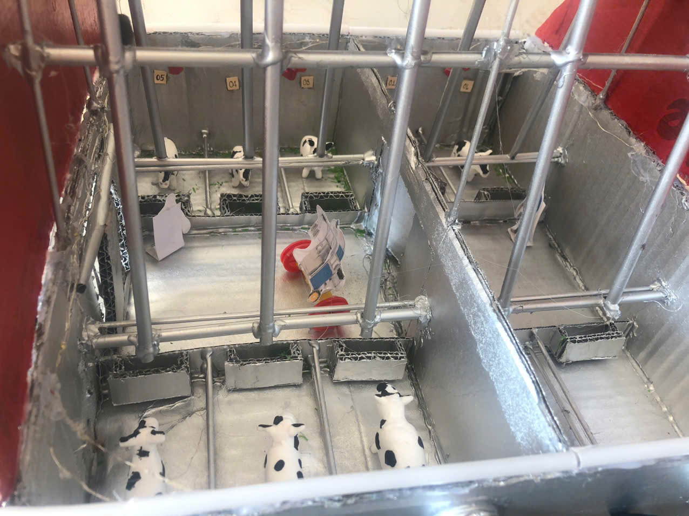
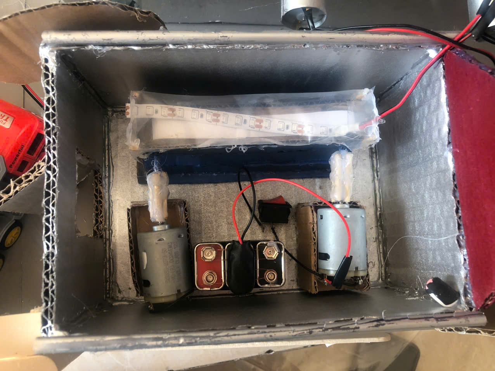
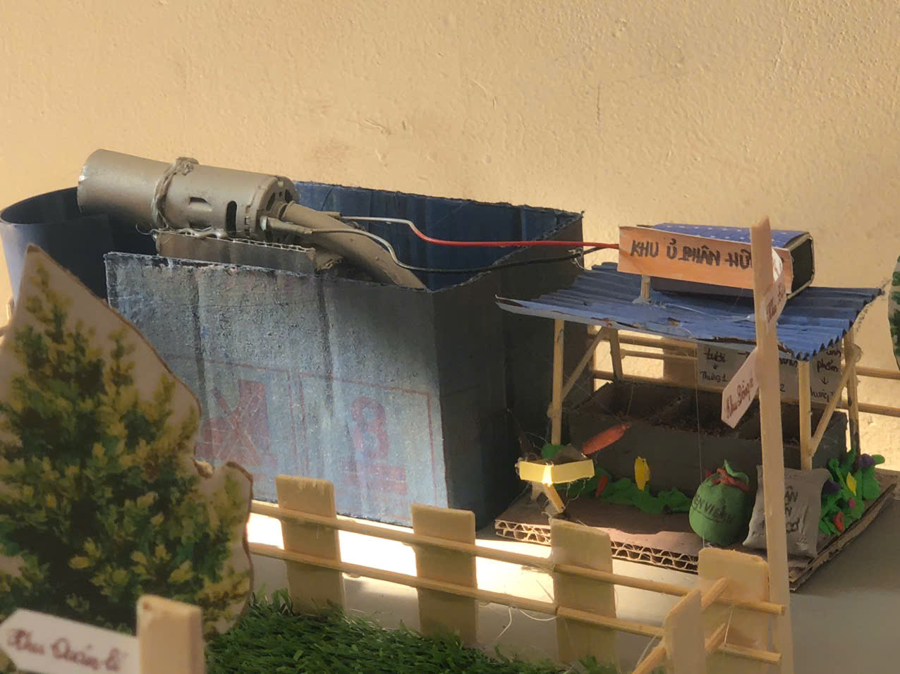
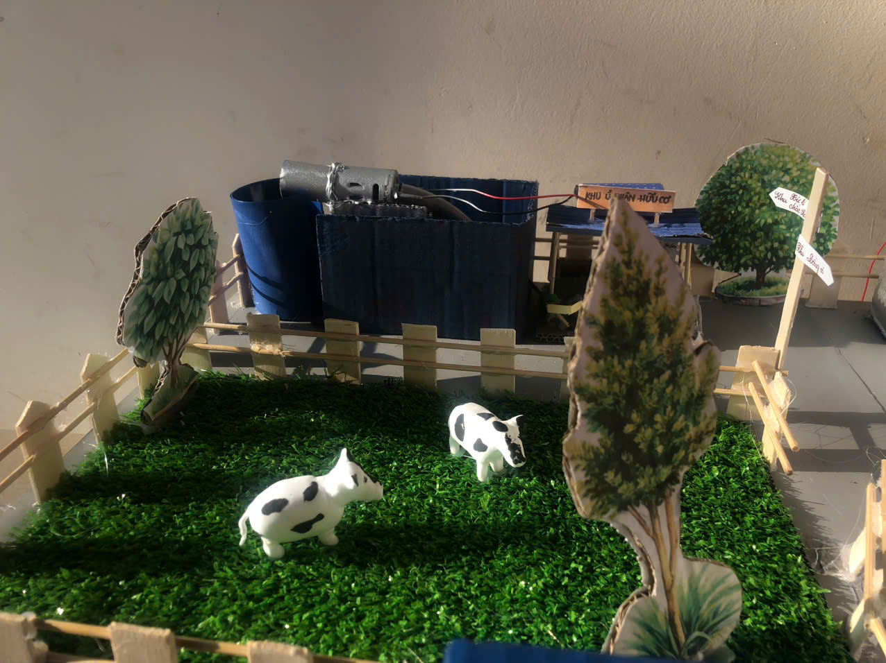
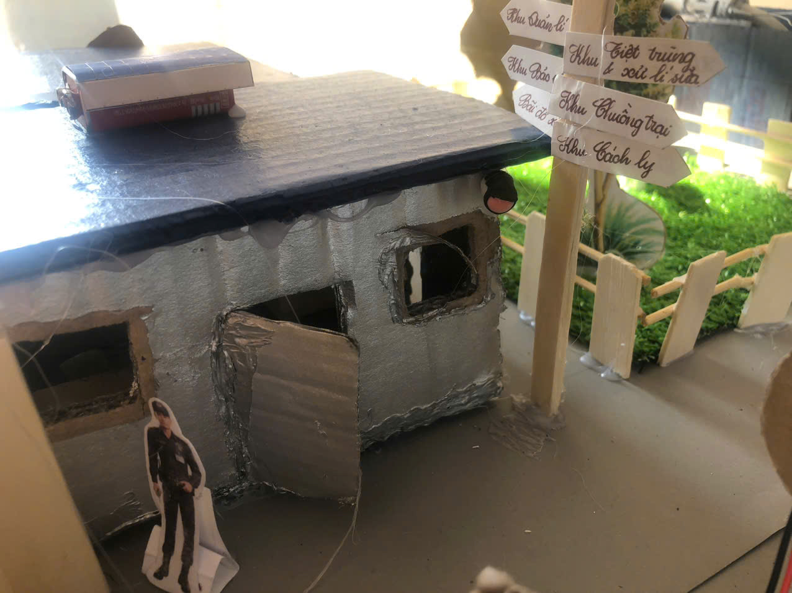

Trang trại bò sữa MilkWay là mô hình trang trại chăn nuôi bò sữa được thiết kế theo hướng kết hợp giữa phương pháp chăn nuôi truyền thống và các công nghệ hỗ trợ hiện đại. Mô hình này được xây dựng nhằm tạo ra nguồn sữa tươi sạch, đảm bảo chất lượng, đồng thời góp phần giới thiệu cách vận hành của một trang trại bò sữa trong thực tế. Trang trại được bố trí thành nhiều khu vực khác nhau và gồm những khu vực chính như khu chuồng trại, khu xử lý sữa, khu xử lý chất thải, khu đồng cỏ và khu quản lý. Tất cả các khu vực đều được sắp xếp hợp lý để thuận tiện cho việc chăm sóc đàn bò cũng như quá trình thu hoạch và bảo quản sữa. Ngoài ra, trang trại còn được trồng nhiều cây xanh xung quanh nhằm tạo môi trường thoáng mát và gần gũi với thiên nhiên.
Trang trại bò sữa MilkWay được hình thành từ ý tưởng xây dựng một mô hình chăn nuôi bò sữa có tổ chức áp dụng công nghệ cao, trong đó các khu vực chăn nuôi và sản xuất được bố trí rõ ràng và khoa học. Ý tưởng xây dựng trang trại bắt đầu được lên kế hoạch vào năm 11/03/2023 và hoàn thiện mô hình vào 24/12/2024. Trong quá trình thiết kế, nhóm xây dựng đã tham khảo nhiều mô hình trang trại bò sữa trong và ngoài nước để tìm hiểu cách bố trí chuồng trại, hệ thống vắt sữa và khu xử lý chất thải. Nhờ đó, trang trại MilkWay được thiết kế theo hướng gọn gàng, hợp lý và dễ quản lý. Tên gọi MilkWay được lấy cảm hứng từ cụm từ “Milky Way” - Dải ngân hà trong vũ trụ. Tên này mang ý nghĩa tượng trưng cho nguồn sữa tinh khiết và thể hiện mong muốn trang trại có thể phát triển ổn định và lâu dài trong tương lai.
Trang trại MilkWay được thiết kế theo dạng mô hình khép kín, gồm nhiều khu vực hoạt động khác nhau nhưng có sự liên kết với nhau.
a) Khu chuồng trại:

b) Khu tiệt trùng:

c) Khu xử lý:

d) Khu đồng cỏ:

e) Khu quản lý:

Để hỗ trợ việc quản lý và chăm sóc đàn bò, trang trại MilkWay có sử dụng một số thiết bị và công nghệ cơ bản như: Camera giám sát để theo dõi hoạt động trong trang trại. Hệ thống đèn điện hiện đại. Máy vắt sữa và máy tiệt trùng giúp quá trình thu hoạch sữa nhanh và đảm bảo vệ sinh. Mã QR cho từng con bò để lưu trữ thông tin về sức khỏe và sản lượng sữa. Quạt thông gió giúp chuồng trại mát mẻ hơn. Hệ thống cung cấp thức ăn + Silo giúp lưu trữ và phân phối thức ăn cho bò một cách tự động, tiết kiệm công sức và nâng cao hiệu quả chăn nuôi. Máy vệ sinh chuồng trại giúp giữ môi trường sạch sẽ. Biogas giúp xử lý chất thải, tạo năng lượng sinh học và phân hữu cơ. Mã QR thông tin về trang trại. Những công nghệ này giúp công việc chăn nuôi trở nên dễ quản lý và hiệu quả hơn so với cách làm hoàn toàn thủ công.
Trong tương lai, trang trại bò sữa MilkWay có nhiều khả năng phát triển thêm về quy mô cũng như hoạt động. Với diện tích khoảng 4.800 m², trang trại vẫn còn không gian để mở rộng thêm chuồng nuôi hoặc các khu chức năng khác. -Một số hướng phát triển có thể thực hiện trong thời gian tới gồm: -Tăng số lượng bò sữa để nâng cao sản lượng sữa mỗi ngày. -Mở rộng khu vực khác, trong đó có khu trồng cỏ và cây xanh để chủ động nguồn thức ăn cho đàn bò. -Xây dựng khu tham quan trang trại để học sinh, sinh viên hoặc khách du lịch có thể đến tìm hiểu về mô hình chăn nuôi bò sữa. -Giới thiệu và bán các sản phẩm từ sữa như sữa tươi hoặc sữa chua. Ngoài ra, với mô hình được thiết kế rõ ràng và có tính ứng dụng thực tế, trang trại MilkWay cũng có thể trở thành nơi thu hút sự quan tâm của các nhà đầu tư hoặc các tổ chức muốn hỗ trợ phát triển nông nghiệp. Việc kết hợp giữa chăn nuôi, công nghệ và du lịch trải nghiệm trang trại đang là xu hướng phát triển khá phổ biến hiện nay. Nếu được đầu tư và phát triển thêm trong tương lai, MilkWay có thể trở thành một trang trại bò sữa tiêu biểu tại khu vực Đồng Tháp, vừa sản xuất sữa vừa là địa điểm tham quan và học tập về nông nghiệp.